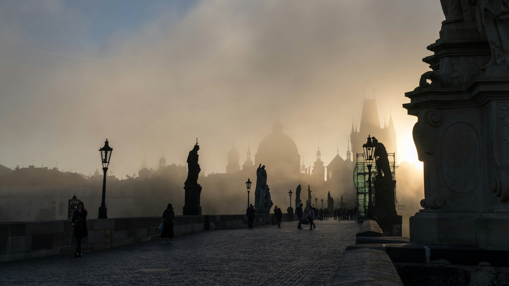

Hoş geldiniz! GeziOM, seyahat tutkunlarının vazgeçilmez rehberi ve keşif partneri olarak karşınızda. Size dünyanın dört bir yanındaki en gizli köşeleri, keşfedilmemiş güzellikleri ve unutulmaz deneyimleri sunuyoruz. Şehirlerin kalbinde, doğal güzelliklerin derinliklerinde ve kültürel hazinelerin arasında yapacağınız yolculuklarda GeziOM, size ilham verecek, yol gösterecek ve seyahatlerinizi daha anlamlı kılacak. Planlamadan keşfe, önerilerden pratik ipuçlarına kadar her şey burada, sizin için hazır. GeziOM ile her adımda yeni bir macera başlatın ve gezmenin keyfini çıkarın!
Orta Avrupa’nın kalbinde yer alan Prag, tarihi ve kültüyle büyüleyen, romantik bir atmosfere sahip bir şehirdir. Çek Cumhuriyeti’nin başkenti olan bu güzel şehir, dar sokakları, etkileyici mimarisi ve zengin tarihiyle her yıl birçok ziyaretçiyi kendine çeker. Prag’ın keşfedilmesi gereken başlıca yerleri ve yapılacak aktiviteler şunlardır:
Prag Kalesi, şehirdeki en önemli tarihi yapıdır ve Avrupa’nın en büyük kalesi olarak bilinir. 9. yüzyıldan beri çeşitli dönemlerde kullanılmış olan kale, gotik, barok ve romanesque mimarilerin bir karışımını sunar. Kale kompleksinin içinde, St. Vitus Katedrali, Eski Kraliyet Sarayı, St. George Bazilikası ve Altın Yokuş (Zlatá ulička) gibi önemli yapılar bulunur. Kale içindeki St. Vitus Katedrali, zarif vitray pencereleri ve etkileyici yapısıyla dikkat çeker.

Wenceslas Meydanı, Prag’ın modern merkezlerinden biridir ve alışveriş, yemek ve eğlence olanaklarıyla ünlüdür. Aynı zamanda, Çek Cumhuriyeti’nin tarihindeki önemli olaylara tanıklık etmiş bir mekândır. Meydanın sonunda yer alan Aziz Wenceslas Heykeli, Çek tarihinde önemli bir figür olan Wenceslas’ın onuruna dikilmiştir.
Vyšehrad, Prag’ın güneyinde yer alan tarihi bir tepedir. Burada, 10. yüzyıldan kalma bir kale kalıntısı, St. Peter ve St. Paul Kilisesi ve güzel bir park bulunur. Vyšehrad’dan şehrin panoramik manzarasını izleyebilir ve sakin bir yürüyüş yapabilirsiniz. Ayrıca, Vyšehrad Mezarlığı’nda birçok ünlü Çek sanatçının ve yazarın mezarı bulunmaktadır.
Çek Cumhuriyeti, bira üretimi konusunda dünya çapında ünlüdür ve Prag, bu kültürü yaşamak için mükemmel bir yerdir. Şehirdeki geleneksel pub'larda ve bira bahçelerinde, farklı Çek biralarını tatma fırsatını yakalayabilirsiniz. Ayrıca, yerel biraların yanı sıra, bu mekanlarda Çek mutfağının lezzetli yemeklerini de deneyebilirsiniz.
Prag, birçok müze ve sanat galerisine ev sahipliği yapar. Çek Ulusal Müzesi, tarih ve doğal tarih koleksiyonlarıyla dikkat çekerken, Prag Modern Sanat Müzesi (Museum of Modern Art) ve Mucha Müzesi, sanatseverler için önemli duraklardır. Alışveriş yapmak ve şehri daha yakından tanımak isteyenler için bu müzeler ve galeriler oldukça keyifli olabilir.
Prag, tarih, kültür ve estetiğin mükemmel bir birleşimini sunar. Şehrin tarihi yapıları, etkileyici köprüleri, renkli meydanları ve dinamik atmosferi, ziyaretçilere unutulmaz bir deneyim yaşatır. Prag’da geçireceğiniz zaman, hem Orta Çağ’ın büyüsünü hem de modern yaşamın keyfini keşfetmenize olanak tanır. Bu masalsı şehirde, her köşe başında keşfedilecek bir şeyler bulabilir ve Prag’ın büyüleyici atmosferine kapılabilirsiniz.